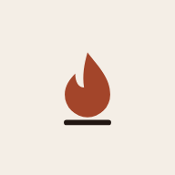

Athéna
Le Journal de Quêtes
Tes tâches deviennent des quêtes, et ton camp grandit avec toi. Installe l’app : une icône sur ton écran d’accueil, le camp en plein écran, même sans réseau.
Pour l’installer
- 1Touche le menu en haut à droite de Chrome.
- 2Choisis « Installer l’application » (ou « Ajouter à l’écran d’accueil »).
- 3Ouvre Athéna depuis ton écran d’accueil.
Ouverte depuis l’appareil photo ? Touche d’abord puis « Ouvrir dans Chrome ».
Pour l’installer
- 1Dans Safari, touche Partager en bas de l’écran.
- 2Choisis « Sur l’écran d’accueil ».
- 3Touche « Ajouter », puis ouvre Athéna depuis ton écran d’accueil.
C’est installé
Athéna est sur ton écran d’accueil. Tu peux aussi l’ouvrir tout de suite.
Ouvrir l’app